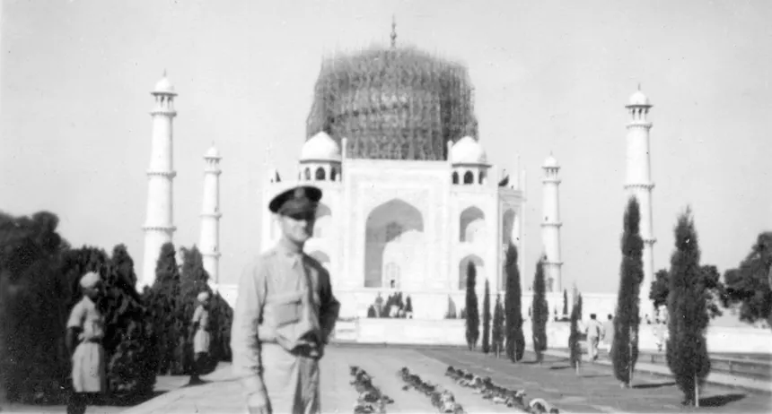
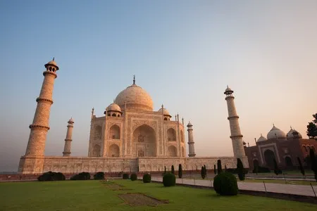
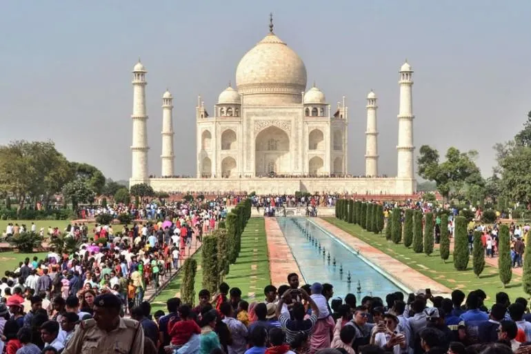

Taj Mahal
Publicado por Ignacio Bruno en Octubre de 2025

El Taj Mahal, situado en la ciudad de Agra (India), fue mandado construir por el emperador Shah Jahan en honor a su esposa Mumtaz Mahal, quien murió al dar a luz a su decimocuarto hijo. Su construcción tardó aproximadamente 22 años, entre 1631 y 1653, y participaron más de 20.000 obreros, artesanos y arquitectos provenientes de toda Asia.
El edificio combina estilos arquitectónicos islámico, persa, indio y turco. Su cúpula principal de mármol blanco, los minaretes que la rodean y los jardines simétricos que lo acompañan representan la perfección, la pureza y la armonía. Es considerado el máximo símbolo del amor eterno y una de las joyas más admiradas del arte mundial.
Historia
Shah Jahan, devastado por la muerte de su esposa favorita, decidió construir un mausoleo que reflejara la belleza de su amor. Se dice que el diseño fue inspirado por la descripción del Paraíso en el Corán. La construcción se llevó a cabo a orillas del río Yamuna, en un área especialmente elegida por su serenidad.
Según los historiadores, el emperador planeaba construir un segundo Taj Mahal en mármol negro frente al blanco, separado por el río, para su propio descanso eterno. Sin embargo, su hijo Aurangzeb lo derrocó antes de que ese sueño se hiciera realidad.
Arquitectura
El Taj Mahal se construyó con mármol blanco traído desde Rajasthan, incrustado con piedras preciosas como jade, turquesa, lapislázuli, zafiros y amatistas. Estas incrustaciones forman intrincados patrones florales que decoran los muros y los arcos interiores.
La estructura principal se eleva sobre una plataforma de mármol y está rodeada por cuatro altos minaretes que enmarcan su simetría perfecta. La cúpula central alcanza una altura de más de 70 metros y refleja los tonos del cielo: rosado al amanecer, dorado al atardecer y plateado bajo la luna.
Simbolismo
Más allá de su belleza arquitectónica, el Taj Mahal simboliza el amor eterno, la pérdida y la devoción. Representa la unión espiritual de dos almas y el poder de los sentimientos humanos frente al paso del tiempo.
En la cultura india, el Taj Mahal se considera también un símbolo del equilibrio entre lo terrenal y lo divino, y ha sido inspiración de poetas, artistas y viajeros durante siglos.
Turismo
Hoy en día, el Taj Mahal recibe más de siete millones de visitantes al año, convirtiéndose en una de las principales atracciones turísticas del mundo. Su belleza es especialmente apreciada durante el amanecer y el atardecer, cuando el mármol blanco cambia de color según la luz del día.
La UNESCO lo declaró Patrimonio de la Humanidad en 1983 y lo considera una de las mayores expresiones del arte musulmán en la India. En 2007 fue elegido como una de las Nuevas Siete Maravillas del Mundo, reafirmando su importancia histórica y cultural.
